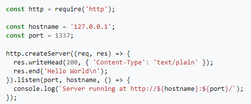
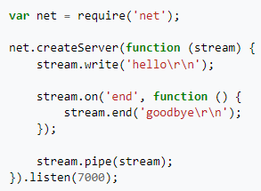

Node.js es un entorno en tiempo de ejecución multiplataforma, de código abierto, para la capa del servidor (pero no limitándose a ello) basado en el lenguaje de programación JavaScript, asíncrono, con E/S de datos en una arquitectura orientada a eventos y basado en el motor V8 de Google. Fue creado con el enfoque de ser útil en la creación de programas de red altamente escalables, como por ejemplo, servidores web. Fue creado por Ryan Dahl en 2009 y su evolución está apadrinada por la empresa Joyent, que además tiene contratado a Dahl en plantilla.
Node.js es similar en su propósito a Twisted o Tornado de Python, Perl Object Environment de Perl, libevent o libev de C, EventMachine de Ruby, vibe.d de D y Java EE de Java existe Apache MINA, Netty, Akka, Vert.x, Grizzly o Xsocket. Al contrario que la mayoría del código JavaScript, no se ejecuta en un navegador, sino en el servidor. Node.js implementa algunas especificaciones de CommonJS. Node.js incluye un entorno REPL para depuración interactiva.

Node.js funciona con un modelo de evaluación de un único hilo de ejecución, usando entradas y salidas asíncronas las cuales pueden ejecutarse concurrentemente en un número de hasta cientos de miles sin incurrir en costos asociados al cambio de contexto. Este diseño de compartir un único hilo de ejecución entre todas las solicitudes atiende a necesidades de aplicaciones altamente concurrentes, en el que toda operación que realice entradas y salidas debe tener una función callback. Un inconveniente de este enfoque de único hilo de ejecución es que Node.js requiere de módulos adicionales como cluster para escalar la aplicación con el número de núcleos de procesamiento de la máquina en la que se ejecuta.
Node.js incorpora varios "módulos básicos" compilados en el propio binario, como por ejemplo el módulo de red, que proporciona una capa para programación de red asíncrona y otros módulos fundamentales, como por ejemplo Path, FileSystem, Buffer, Timers y el de propósito más general Stream. Es posible utilizar módulos desarrollados por terceros, ya sea como archivos ".node" precompilados, o como archivos en Javascript plano. Los módulos Javascript se implementan siguiendo la especificación CommonJS para módulos, utilizando una variable de exportación para dar a estos scripts acceso a funciones y variables implementadas por los módulos.
Los módulos de terceros pueden extender node.js o añadir un nivel de abstracción, implementando varias utilidades middleware para utilizar en aplicaciones web, como por ejemplo los frameworks connect y express. Pese a que los módulos pueden instalarse como archivos simples, normalmente se instalan utilizando el Node Package Manager (npm) que nos facilitará la compilación, instalación y actualización de módulos así como la gestión de las dependencias. Además, los módulos que no se instalen en el directorio por defecto de módulos de Node necesitarán la utilización de una ruta relativa para poder encontrarlos. El wiki Node.js proporciona una lista de varios de los módulos de terceros disponibles.
Pequeña explicación de qué es Node.JS:
Para finalizar esta introducción sobre Node.JS, facilitaremos dos ejemplos de código. Para el primero, crearemos el ya tan conocido "Hola Mundo" de un servidor HTTP escrito en Node.JS:
Para el segundo ejemplo, haremos lo mismo con un servidor TCP que escucha en el puerto 7000 y responde con cualquier cosa que se le envíe:
Video explicatorio extenso sobre Node.JS: